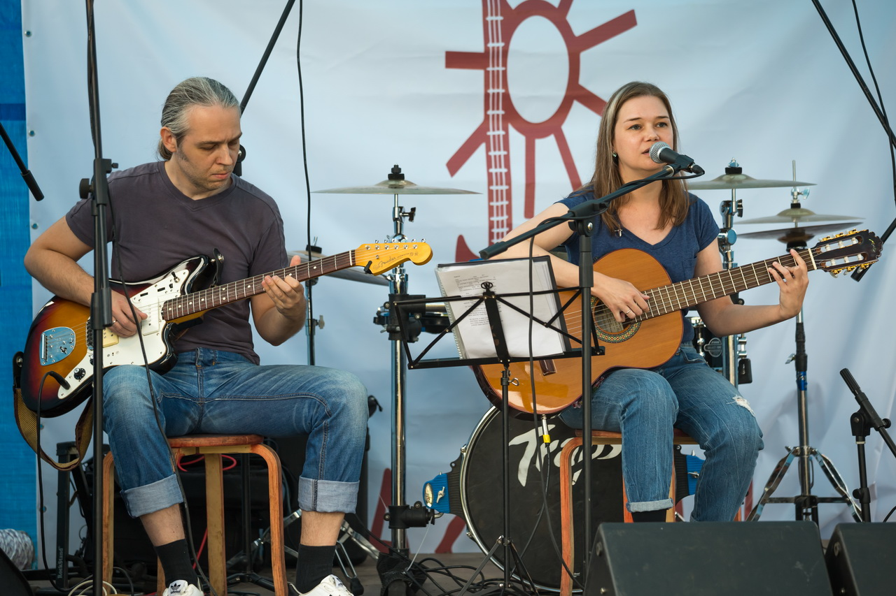

Дуэт «Железные птицы»
Музыкальный дуэт существует с декабря 2014-го года, когда состоялось первое выступление в таком составе: классическая гитара, электрогитара и вокал. Со временем живое звучание дополнилось сначала мелодикой, затем клавишным синтезатором, а для записей стали использоваться все возможности полнозвучного ансамбля, включая ударные и бас.
Дуэт пишет и исполняет изысканные песни, в которых поэзия выступает на равных с музыкой. Плавный бард-рок с с элементами джаза, блюза, фолка сменяется то экспрессивными композициями потяжелее, то плавной психоделикой. Поводами для песен становятся то привычные, обыденные вещи: заброшенные стадионы, толстые городские утки, трамваи, дождь, кофе с сигаретой, то сказочные и книжные мотивы, то драматичные сюжеты о любви, смерти, войнах и поиске себя.
Дарья «Лита» Лебедева (автор песен, вокал, акустическая гитара, клавишные)

Закончила исторический факультет МГПУ (и даже чуточку поработала экскурсоводом в музее, почти по специальности), но в основном работала редактором и журналистом, более пяти лет – литературным обозревателем, в том числе в штате газеты «Книжное обозрение». Второе высшее – Литературный институт им. Горького. Но сейчас уже более двух лет работает тестировщиком программного обеспечения, осваиваясь в IT. Музыка – как и литература – была и останется навсегда. С 15 лет начала писать песни под гитару на собственные стихи. До «Железных птиц» выступала сольно, пела в ансамбле «Навь», пела, играла на гитаре и бас-гитаре в группе «Мост Мирабо».
Вадим «Хед» Матвеев (электрогитара, звукозапись, аранжировки)
Закончил МИЭМ по специальности инженер-системотехник, кандидат технических наук. Всю жизнь работает разработчиком программного обеспечения. С 16 лет играет на электрогитаре. Осваивал инструмент самостоятельно, посещал рок-лицей «Красный химик», обучался в МКИМ. Увлечен гитаростроительством, постоянно переделывает и улучшает гитары. До «Железных птиц» играл на соло-гитаре в группе «Мост Мирабо».
Наши фото
Использованы фотографии Николая Гавриленко, Полины Ефименко, Екатерины Устиновой, Sid Virtuoz, Ольги Ворониной, Вероники Дорофеевой.{kind=link}
{kind=link}
{kind=link}
{kind=link}
{kind=link}
{kind=link}
{kind=link}
{kind=link}
Техничекий райдер. Скачать
Обязательно:
1. Микрофон вокальный 1шт. + шнур к нему балансный XLR-XLR.2. Директ-бокс для акустической гитары + 2 шнура к нему. Выход гитары – Jack 1/4.
3. Два линейных входа для процессора электрогитары + 2 шнура Jack-Jack 1/4 для них.
4. Пульт для подключения п.1–п.3.
5. Мониторы сценические желательно 2 шт., но можно один.
6. Микрофонная стойка.
Желательно:
7. Пюпитр.8. Очень желательна клавишная/ноутбучная стойка, с шириной 50 см в положении сидя. Обычная Х-стойка не подходит.
9. Гитарные стойки 2 шт.
По умолчанию подразумеваются:
- электрическая розетка на 220в,- порталы.